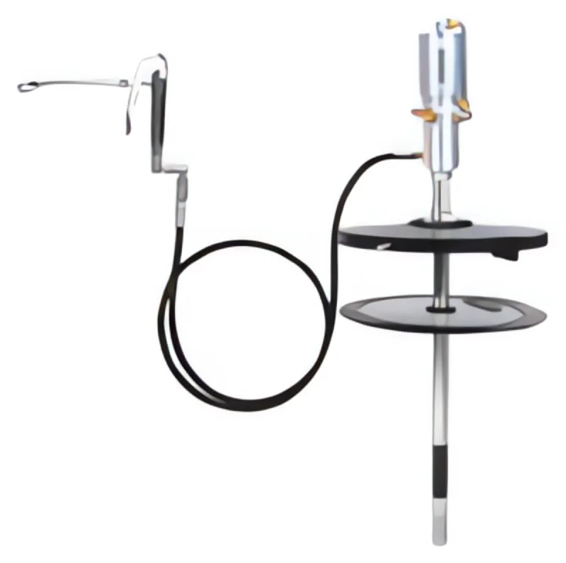

GROZ · Greasing Equipment
Air Operated Grease Ratio Pumps 60:1
CAT NR GP1/ST/601/N · ORD NR 45890
| CAT NR (catalogue number) | GP1/ST/601/N |
|---|---|
| ORD NR (order number) | 45890 |
| Box quantity | 1 |
| Variant (printed column) | NPT THREADS |
| Drum cover diameter (inch) | lb 12 |
| Drum cover diameter (mm) | 310 |
| Fits | 20-30 kg / 25-50 / 5 gal. pails |
| Follower plate dimensions I.D. grommet (inch) | 1.16 |
| Follower plate dimensions I.D. grommet (mm) | 29.5 |
| Follower plate dimensions O.D. plate (inch) | 11-11/32 |
| Follower plate dimensions O.D. plate (mm) | 288 |
| Follower plate dimensions O.D. steel end (inch) | 9-1/2 |
| Follower plate dimensions O.D. steel end (mm) | 241 |
| Table section | PUMP ASSEMBLY |
Open in the catalogue The catalogue PDF, page 101
From the GROZ Fluid Handling CC-07 catalogue. Not yet verified: these details were read from the printed catalogue automatically; check the catalogue page before ordering.